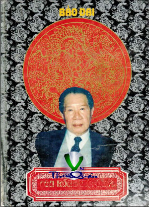

« Back
Con Rồng An Nam
By Bảo Đại

MỤC LỤC - LỜI MỞ ĐẦU
PHẦN THỨ NHẤT - NƯỚC VIỆT NAM NGÀY TRƯỚC
Thời Thanh Niên Ở Pháp
PHẦN THỨ HAI - HOÀNG ĐẾ VIỆT NAM
Lịch Sử Nhà Nguyễn
Lịch Sử Nhà Nguyễn (Tt)
Xã Hội Việt Nam
Dự Định Cải Cách
Bảo Tồn Lễ Nghi
Trường Học Rừng Xanh
Đông Và Tây
Hội Hè Và Tế Lễ Ở Việt Nam
Cuộc Chiến Xa Xôi
Nhật Tấn Công
Cách Mạng Việt Minh
PHẦN THỨ BA - Hồ Chí Minh
Sự Xâm Nhập Của Quân Đội Trung Hoa
Đại Biểu Quốc Hội
Tạm Nghỉ Ở Trung Hoa
Tạm Trú Ở Hong Kong
Kêu Gọi Và Giáo Đầu 1947
Xảo Quyệt Ngoại Giao 1947-1948
Xảo Quyệt Ngoại Giao 1947-1948 (Tt)
Hy Vọng Và Thất Vọng 1948
Bản Tuyên Bố Chung Ở Vịnh Hạ Long
Tiến Tới Một Giải Pháp
PHẦN BỐN - LÀM QUỐC TRƯỞNG 1949-1955
Thị Sát Các Kinh Đô
Quân Đội Quốc Gia Việt Nam
Hội Nghị Paris
De Lattre Tới
Vị Tổng Tư Lệnh Quân Đội Của Tôi
Trống Rỗng Hoàn Toàn
Tình Hình Suy Thoái
Hội Nghị Genève
Ngô Đình Diệm Cầm Quyền
Giải Pháp Mỹ
Cảm Nghĩ
Phụ Đính I
Phụ Đính II
Phụ Đính III
Phụ Đính IV
ANNEXE I
ANNEXE II
ANNEXE III
ANNEXE IV
Cảm Nghĩ Của Người Ngoại Quốc